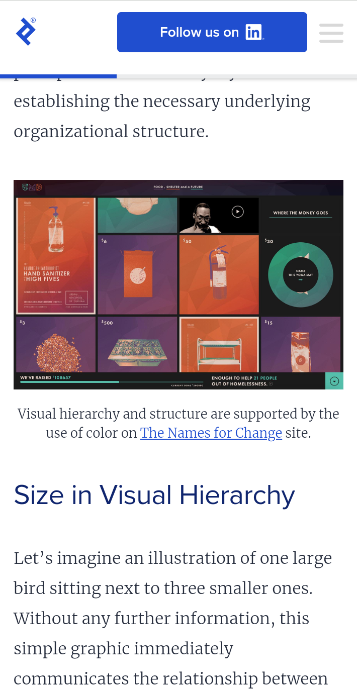
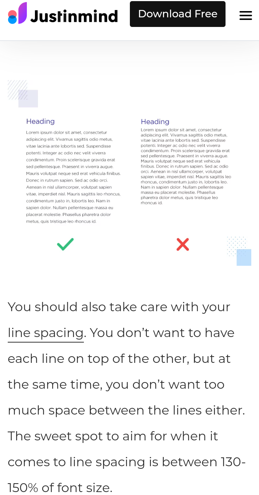
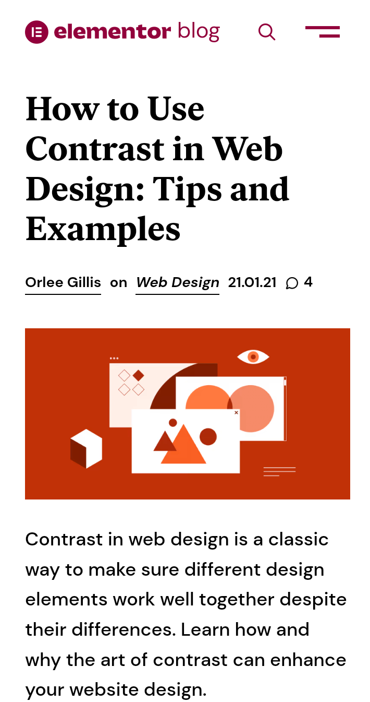

Design Principles Document
ThankGod Andrew
Visual Hierarchy
Toptal Designers
toptal.com
Based on the information on visual hierarchy found on the Toptal Designers web page. The information portrays visual hierarchyas as an important part of visual design, its definition is that visual hierarchy is the laying out of content in a composition in order to effectively communicate information and convey meaning. Visual hierarchy is said to direct viewers to the most important information first, and then to secondary content. It is established through the appropriate use of color, shapes, size,alignment, motion, sound, distance, proportion, and orientation. the meaning, and mood of a composition is conveyed via the creative use of graphic elements that determine the visual hierarchy.
White Space and Clean Design
Adobe XD
xd.adobe.com
Another important part of visual designing or UI is white space which is also know as negative space. Its know to be an empty space around a content and functional element of a page. This let's you design breathe by reducing the amount of text and functional elements that users see at once. Its also important to know that despite it being called 'white,' this space doesn't need to be white, any type of space that serves as a backgroud for the content can be considered white space. There are some functional elements of white space in visual design or user interface that needs to be know: line spacing, padding, letter spacing, and margins. This elements makes text more readable and grants that attraction to users to a particular object, and white space also creates visual hierarchy on a page.
Contrast
Elementor Blog
elementor.com
Contrast in web and interface design is considered one of the five essential visual design principles. The common ground between these principles is that they represent how design elements work together to form a visual entity that users perceive and interact with. Contrast is the relationship between two or more design elements whose dramatic difference are emphasized when both element are shown together, when two elements appear to be less similar the greater the contrast between them. The most effective way to use contrast in web design is by familiarizing yourself with the many types of contrast that can exist. Most people might think when we talk about contrast, we literally mean color. Yes you are right but Its important to know that their are six types of contrast, there is color which is the most popular, size, space, foreground and background, elements types, and shapes.